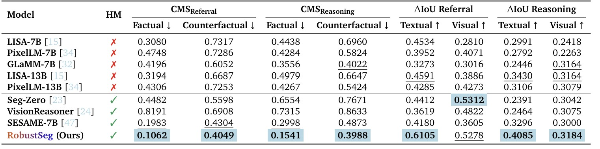

Abstract
Segmentation Vision-Language Models (VLMs) have significantly advanced grounded visual understanding, yet they remain prone to pixel-grounding hallucinations, producing masks for incorrect objects or for objects that are entirely absent. Existing evaluations rely almost entirely on text- or label-based perturbations, which check only whether the predicted mask matches the queried label. Such evaluations overlook the spatial footprint and severity of hallucination and therefore fail to reveal vision-driven hallucinations, which are more challenging and more prevalent. To address this gap, we formalize the task of Counterfactual Segmentation Reasoning (CSR) where a model must segment the referenced object in the factual image and abstain in its counterfactual counterpart. To support this task, we curate HalluSegBench the first large-scale benchmark to diagnose referring and reasoning expression segmentation hallucinations using controlled visual counterfactuals, alongside new evaluation metrics that measure hallucination severity and disentangle vision- and language-driven failure modes. We further introduce RobustSeg a segmentation VLM trained with counterfactual fine-tuning (CFT) to learn when to segment and when to abstain. Experimental results confirm RobustSeg reduces hallucinations by 30%, while improving segmentation performance on FP-RefCOCO(+/g).

✅ Contributions
- New Task. To assess segmentation fidelity, we introduce the novel task of Counterfactual Segmentation Reasoning (CSR) which assesses whether segmentation models correctly adapt to counterfactual visual changes. Our experiments show that vision-driven hallucinations are far more severe than label-driven ones, highlighting critical gaps in current grounding capabilities.
- New Benchmark. We curate HalluSegBench the first benchmark for pixel-grounding hallucination via counterfactual visual reasoning, and propose novel evaluation metrics that quantify hallucination along complementary dimensions.
- New Model. We present RobustSeg a segmentation VLM, trained with Counterfactual Finetuning (CFT), with abstention-aware grounding capabilities. RobustSeg learns to distinguish visual evidence from contextual priors, yielding large and consistent reductions in hallucination while preserving segmentation fidelity.
Quantitative Results

Comparison of Reasoning Segmentation Models on HalluSegBench Metrics, including textual and visual IoU drop for referral and reasoning tasks (ΔIoU Referral, ΔIoU Reasoning),
factual and counterfactual Confusion Mask Score ( CMS).
Qualitative Results
RobustSeg demonstrates hallucination mitigation capabilities compared with other reasoning-based segmentation models. We present qualitative examples that illustrate the predictions of benchmarked models across the four query-image combinations in both referral and reasoning tasks, along with the corresponding ground truth mask.

Here, c = “giant refrigerator” and c′ = “microwave oven”.

Here, c = “Where in the picture would be suitable for storing wine?” and c′ = “Where in the picture would be suitablefor resting one's feet?”.
BibTeX
@inproceedings{li2025hallusegbench,
title={Counterfactual Segmentation Reasoning: Diagnosing and Mitigating Pixel-Grounding Hallucination},
author={Li, Xinzhuo and Juvekar, Adheesh and Zhang, Jiaxun and Liu, Xingyou and Wahed, Muntasir and Nguyen, Kiet A. and Shen, Yifan and Yu, Tianjiao and Lourentzou, Ismini},
booktitle={IEEE/CVF Conference on Computer Vision and Pattern Recognition (CVPR Findings)},
year={2026}
}